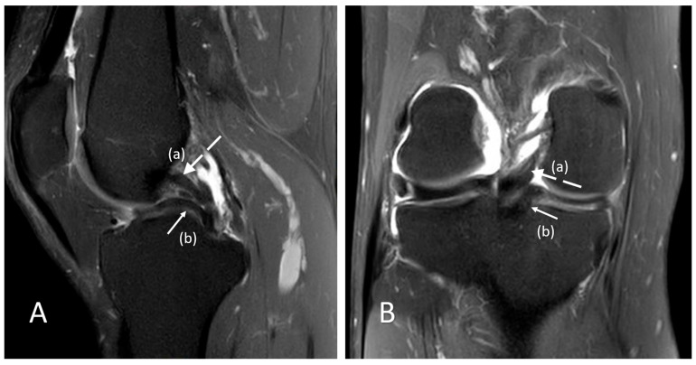

360 — Gối: ACL, sụn chêm 2-lát-cắt & quai xô / Knee MRI
Tags: pattern:rach-sun-chem pattern:dut-ACL vung:khop-goi protocol:MRI-khop-goi
Mức chắc chắn (certainty): tổng hợp y văn (literature synthesis) — nhóm tự biên từ y văn mở, chưa gắn ca nguyên văn đơn lẻ.
1. Tổng quan — sụn đen chạm mặt mới là rách + pivot-shift để lại dấu hôn
- Sụn chêm bình thường tối đen đồng nhất mọi xung — TẠI SAO quy tắc chạm 2 lát cắt đạt PPV > 90–95%: tín hiệu nội sụn độ I/II (thoái hóa nhầy) rất thường gặp sau 40 tuổi, chỉ khi đường sáng chạm mặt khớp trên ≥ 2 lát liên tiếp mới chắc chắn rách thông (độ III).
- Cơ chế pivot-shift (vẹo ngoài-xoay trong): lồi cầu ngoài + mâm chày sau ngoài đập vào nhau — TẠI SAO đụng dập hôn nhau (kissing contusions) đúng 2 điểm này + trượt chày > 5–7 mm + PCL chùng = đứt ACL: chày trượt trước, PCL mất căng cong gập.
- Rách quai xô: mảnh dọc lật vào liên lồi cầu — 2 PCL + mất nơ (≤ 1 bow-tie) = kẹt khớp cấp cứu.
2. Gamut sưng gối sau chấn thương vẹo (Gamut)
- Kẹt khóa khớp + 2 PCL + mất nơ: quai xô sụn chêm trong — nội soi sớm (khâu/cắt).
- Tràn máu + hôn nhau + trượt > 5–7 mm: đứt ACL — tái tạo (hamstring/patellar).
- Đường sáng nội sụn không chạm mặt: thoái hóa nhầy — bảo tồn, đừng nội soi.
- Mức mỡ-máu + vỡ mâm: gãy mâm chày (bài 320) — CT + mổ.
3. Bảng so sánh phân biệt (ma trận đối chiếu)
| Thực thể (entity) | Hình ảnh điển hình | Chốt vào (rule-in) | Chốt loại (rule-out) | Gợi ý xác nhận |
|---|---|---|---|---|
| Rách sụn chêm | Sáng chạm mặt khớp ≥ 2 lát + sagittal và coronal | Two-slice-touch, PPV > 90–95% | Nội sụn không chạm → nhầy | Nội soi khâu khi kẹt/trẻ |
| Quai xô | 2 PCL + mất nơ ≤ 1 + kẹt khóa | Mảnh liên lồi cầu + khóa khớp | Humphrey/Wrisberg → giả 2 PCL | Nội soi cấp cứu |
| Đứt ACL | Mất sợi + hôn nhau + trượt > 5–7 mm + PCL chùng | Pivot-shift + Lachman + MRI | Sợi còn + không trượt → bong điểm bám | Tái tạo + tập phục hồi |
| Thoái hóa nhầy | Sáng nội sụn I/II không chạm mặt | Không chạm + > 40 tuổi + không kẹt | Chạm ≥ 2 lát → rách | Bảo tồn, không nội soi |

(A) sagittal: dải thấp song song trước PCL = mảnh sụn chêm trong lật vào; (B) coronal: mất cấu trúc thân sụn. Nguồn: Koutserimpas et al., Reports 2026 Fig. 1, CC BY 4.0.4. Protocol MRI gối
- MRI 1.5–3T + PD fat-sat 3 mặt + T2 + T1: nơ sụn chêm (≥ 2 bow-tie thường), ACL sagittal, hôn nhau coronal/sagittal; Lachman + pivot-shift lâm sàng trước MRI.
flowchart TD
A[Sưng/kẹt gối sau vẹo] --> B{Khóa khớp + 2 PCL?}
B -->|Có| C[Quai xô: nội soi sớm]
B -->|Không| D{Tràn máu + hôn nhau?}
D -->|Có| E[Đứt ACL: tái tạo]
D -->|Không| F{Sáng chạm ≥2 lát? Rách}
5. Cạm bẫy
- Dây chằng Humphrey/Wrisberg + PCL nhầy tram-track giả 2 PCL — coronal + mất nơ mới chốt quai xô.
- Thoái hóa nhầy nội soi oan ở người trung niên — không chạm mặt = không rách, dù lâm sàng đau.
- Bong điểm bám chày ACL ở trẻ tưởng đứt giữa — X-quang/CT gai chày + vít cố định, đừng tái tạo như người lớn.
6. Tự lượng giá — Blind Quiz
Ca 1 — Nam 34 tuổi đau kẹt gối 3 tháng sau xoay người. Đọc PD-FS.
- Hỏi: dải thấp trước PCL là gì? Chẩn đoán + xử trí (khâu hay cắt)?
Bấm để hiện đáp án
- Dấu hiệu (findings): dải thấp song song trước PCL (a) = mảnh sụn + coronal mất thân sụn trong (b).
- Chẩn đoán (diagnosis): rách quai xô sụn chêm trong trật vào liên lồi cầu (double PCL) — mạn 3 tháng vùng đỏ-trắng khó khâu → cắt chọn lọc + tập phục hồi (khâu khi cấp + vùng đỏ-đỏ).
- Nguồn: Koutserimpas et al., Fig. 1, CC BY 4.0.
Ca 2 — Tràn máu + hôn nhau lồi cầu ngoài-mâm chày + trượt 8 mm: đứt ACL không? (Bảng mục 3.)
Bấm để hiện đáp án
- Đứt ACL: pivot-shift + trượt > 5–7 mm — tái tạo + tập (khác bong điểm bám trẻ).
Ca 3 — Sáng nội sụn sau không chạm mặt, 55 tuổi, không kẹt: rách hay nhầy? Nội soi không? (Bảng mục 3.)
Bấm để hiện đáp án
- Thoái hóa nhầy độ I/II: không chạm mặt — bảo tồn, tuyệt đối không nội soi oan.
Bài liên quan chéo
- 300 – Tổng quan MSK
- 320 – Gãy & trật khớp (mâm chày + mỡ-máu)
- 340 – Khớp OA/RA (OA khoang trong)
Không dùng để chẩn đoán độc lập khi chưa có người hướng dẫn.